| TABLE 22.2 Transformed Data for the Code Size Study with Replications
|
|
| Workload
| W
| X
| Y
| Z
|
|
| I
| 3.8455
| 4.0807
| 4.4633
| 3.9958
|
|
| 3.8191
| 4.0717
| 4.4321
| 3.9641
|
|
| 3.8634
| 4.1164
| 4.4779
| 4.0015
|
| J
| 3.5061
| 3.7095
| 3.9523
| 3.6184
|
|
| 3.4598
| 3.7507
| 3.9066
| 3.6291
|
|
| 3.5469
| 3.6635
| 3.9857
| 3.6091
|
| K
| 3.6727
| 3.9735
| 4.2953
| 3.8506
|
|
| 3.6933
| 3.9510
| 4.2866
| 3.8440
|
|
| 3.6498
| 3.9984
| 4.3247
| 3.8246
|
| L
| 3.7082
| 3.7492
| 4.3491
| 3.7288
|
|
| 3.7410
| 3.7743
| 4.3636
| 3.7585
|
|
| 3.6761
| 3.7127
| 4.3313
| 3.6959
|
| M
| 3.8330
| 4.0879
| 4.4558
| 3.9914
|
|
| 3.8056
| 4.0790
| 4.4289
| 3.9688
|
|
| 3.8578
| 4.1131
| 4.4851
| 4.0100
|
|
The results are interpreted as follows. An average workload on an average processor requires a log code size of 3.94 (8710 instructions). Processor W requires 0.23 less log code size (that is, a factor of 1.69 less) than an average processor. Processor X requires 0.02 more (a factor of 1.05 more) than an average processor, and so on. The difference of log code sizes of an average workload on processors W and X is 0.25 (a factor of 1.78).
| TABLE 22.3 Computation of Effects for the Code Size Study with Replications
|
|
| Workload
| W
| X
| Y
| Z
| Row
Sum
| Row
Mean
| Row
Effect
|
|
| I
| 3.8427
| 4.0896
| 4.4578
| 3.9871
| 49.1315
| 4.0943
| 0.1520
|
| J
| 3.5043
| 3.7079
| 3.9482
| 3.6188
| 44.3377
| 3.6948
| –0.2475
|
| K
| 3.6720
| 3.9743
| 4.3022
| 3.8397
| 47.3646
| 3.9470
| 0.0047
|
| L
| 3.7084
| 3.7454
| 4.3480
| 3.7277
| 46.5887
| 3.8824
| –0.0599
|
| M
| 3.8321
| 4.0933
| 4.4566
| 3.9900
| 49.1163
| 4.0930
| 0.1507
|
| Column
|
| sum
| 18.5594
| 19.6105
| 21.5128
| 19.1635
| 78.8463
|
|
|
| Column
|
| mean
| 3.7119
| 3.9221
| 4.3026
| 3.8327
|
| 3.9423
|
| Column
|
| effect
| –0.2304
| –0.0202
| 0.3603
| –0.1096
|
|
| TABLE 22.4 Interactions In the Code Size Study with Replications
|
|
| Workload
| W
| X
| Y
| Z
|
|
| I
| –0.0212
| 0.0155
| 0.0032
| 0.0024
|
| J
| 0.0399
| 0.0333
| –0.1069
| 0.0337
|
| K
| –0.0447
| 0.0475
| –0.0051
| 0.0023
|
| L
| 0.0564
| –0.1168
| 0.1054
| –0.0450
|
| M
| –0.0305
| 0.0205
| 0.0033
| 0.0066
|
|
The interactions (or cell effects) for the (i, j)th cell are computed by subtracting µ + αj + βi from the cell mean yij. The mean interactions so computed are listed in Table 22.4. The computation can be verified by checking that the row as well column sums of interactions are zero.
The interactions are interpreted as follows. Workload I on processor W requires 0.02 less log code size than an average workload on processor W or equivalently 0.02 less log code size than that on an average processor.
22.3 COMPUTATION OF ERRORS
The estimated response for all observations in the (i, j)th experiment is given by
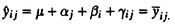
Thus, the error in the kth replication of the experiment is
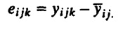
Notice that this is simply the difference between the observation and the cell mean.
- Example 22.2 For the data of Example 22.1, the cell mean for the cell (1, 1) is 3.8427. Thus, the errors in the three observations in this cell are 3.8455 – 3.8427 = 0.0028, 3.8191 – 3.8427 = –0.0236, and 3.8634 – 3.8427 = 0.0208. We verify that the sum of the three errors is zero. The errors for other cells can be computed similarly.
22.4 ALLOCATION OF VARIATION
The total variation of y can be allocated to the two factors, the interaction between them, and the experimental errors. To do so, we square both sides of the model equation and add across all observations. The cross-product terms cancel out, and we obtain
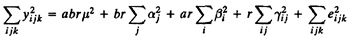
SSY = SSO + SSA + SSB + SSAB + SSE
where various sums of squares have been appropriately placed below their corresponding terms. The term SSAB is the variation explained by the interaction. The total variation (SST), as before, is
SST = SSY – SSO = SSA + SSB + SSAB + SSE
Thus, the total variation can be divided into parts explained by factors A and B, the interaction AB, and an unexplained part due to experimental errors. This equation can also be used to compute SSE, since the other sums can be easily computed. The percentage of variation explained by a factor or interaction can be used to measure the importance of the corresponding effect.
- Example 22.3 For the data of Example 22.1, various sums of squares are
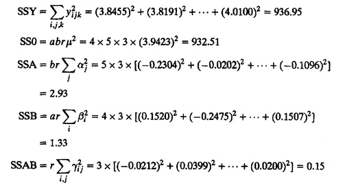
- SST = SSY–SS0 = 936.95 – 932.51 = 4.44
The sum SSE can be obtained either by computing individual errors or more easily by using other sums of squares as follows:
SSE = SSY – SS0 – SSA – SSB – SSAB
= 936.95 – 932.51 – 2.93 – 1.33 – 0.15
=0.03
The percentage of variation explained by various factors are as follows:
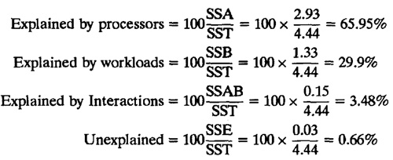
Since the model explains a total of 99.3% variation, it appears to be a good model. The interactions explain less than 5% variation and may be ignored.
22.5 ANALYSIS OF VARIANCE
To statistically test the significance of a factor, we divide the sum of squares by their corresponding degrees of freedom (DF) to get mean squares. The degrees of freedoms for various sums are as follows:
SSY = SSO + SSA + SSB + SSAB + SSE
abr = 1 + (a – 1) + (b – 1) + (a – 1)(b – 1) + ab(r – 1)
The errors have only ab(r – 1) degrees of freedom since only r – 1 of the r errors in each cell can be independently chosen. The degrees of freedom for other sums can be similarly justified.
The mean squares are obtained by dividing the sums of squares by their respective degrees of freedom. The ratios MSA/MSE, MSB/MSE, and MSAB/MSE have F[a – 1,ab(r – 1)], F[b – 1,ab(r – 1)], and F[(a – 1)(b – 1), ab(r – 1)] distributions. A convenient tabular arrangement to conduct an Analysis Of Variance (ANOVA) for a two-factor design with replications is shown in Table 22.5.
- Example 22.4 The ANOVA for the data of Example 22.1 is shown in Table 22.6. All three computed F-ratios are higher than the values from the table. Thus, all three effects are statistically significant at a significance level of 0.10. As the line under the table indicates, the standard deviation of the errors is 0.03.
22.6 CONFIDENCE INTERVALS FOR EFFECTS
The variance of the model parameters can be obtained from that of the errors using expressions listed in Table 22.7. The confidence intervals for the effects can be computed using t-values read at ab(r – 1) degrees of freedom, which are the degrees of freedom associated with errors. In the table, the estimates and variance for linear combination of effects, such as µ + αj and µ + βj + γi, are also shown along with those for contrasts of effects.
TABLE 22.5 ANOVA Table for Two Factors with Replications
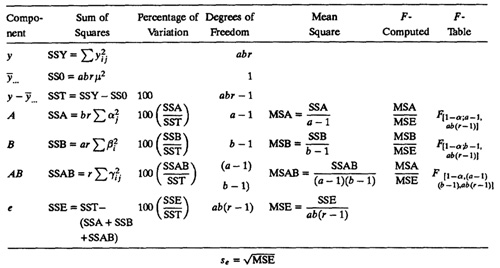
| TABLE 22.6 ANOVA Table for the Code Size Study with Replications
|
|
| Component
| Sum of
Squares
| Percentage of
Variation
| Degrees of
Freedom
| Mean
Square
| F–
Computed
| F–
Table
|
|
| y
| 936.95
|
| y..
| 932.51
|
| y – y..
| 4.44
| 100.00
| 59
|
| Processors
| 2.93
| 65.96
| 3
| 0.9765
| 1340.01
| 2.23
|
| Workloads
| 1.33
| 29.90
| 4
| 0.3320
| 455.65
| 2.09
|
| Interactions
| 0.15
| 3.48
| 12
| 0.0129
| 17.70
| 1.71
|
| Errors
| 0.03
| 0.66
| 40
| 0.0007
|
|
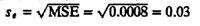
- Example 22.5 For the data of Example 22.1, we know from Example 22.4 that se = 0.03.
The standard deviation of processor effects is
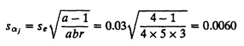
TABLE 22.7 Parameter Estimation for Two Factors with Replications

The error degrees of freedom are ab(r – 1) = 40. Since the degrees are greater than 30, we can use the quantiles of a unit normal variate rather than the t-variate. The 0.95 quantile of unit normal z0.95 from Table A.2 in the Appendix is 1.645. Thus, the 90% confidence interval for the effect of processor W is
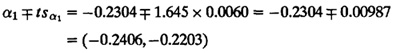
Since the confidence interval does not include zero, this effect is significant.
The confidence intervals for various processor and workload effects are listed in Table 22.8. The intervals are very narrow. This is because with replications we have been able to isolate interactions from experimental errors. It turns out that in this case the experimental errors are very small, and thus, we can be very confident about the ranges of the effects. The confidence intervals for interactions are shown in Table 22.9.
| TABLE 22.8 Confidence Intervals for Effects In the Code Size Study with Replications
|
|
| Parameter
| Mean
Effect
| Standard
Deviation
| Confidence
Interval
|
|
| µ
| 3.9423
| 0.0035
| (3.9364, 3.9482)
|
| Processors
|
| W
| –0.2304
| 0.0060
| (–0.2406, –0.2203)
|
| X
| –0.0202
| 0.0060
| (–0.0304, –0.0100)
|
| Y
| 0.3603
| 0.0060
| (0.3501, 0.3704)
|
| Z
| –0.1096
| 0.0060
| (–0.1198, –0.0995)
|
| Workloads
|
| I
| 0.1520
| 0.0070
| (0.1402, 0.1637)
|
| J
| –0.2475
| 0.0070
| (–0.2592, –0.2358)
|
| K
| 0.0047
| 0.0070
| (–0.0070, 0.0165)a |
| L
| –0.0599
| 0.0070
| (–0.0717, –0.0482)
|
| M
| 0.1507
| 0.0070
| (0.1390, 0.1624)
|
|
a Not significant.
| TABLE 22.9 Confidence Intervals for Interactions in the Code Size Study with Replications
|
|
|
| Workload
| W
| X
| Y
| Z
|
|
|
| I
| (–0.0415, –0.0009)
| (–0.0048, 0.0358)a
| (–0.0171, 0.0236)a
| (–0.0179, 0.0228)a
|
|
| J
| (0.0196, 0.0602)
| (0.0130, 0.0536)
| (–0.1272, –0.0865)
| (0.0133, 0.0540)
|
|
| K
| (–0.0650, –0.0243)
| (0.0271, 0.0678)
| (–0.0254, 0.0152)a
| (–0.0180, 0.0226)a
|
|
| L
| (0.0361, 0.0768)
| (–0.1371, –0.0964)
| (0.0850, 0.1257)
| (–0.0654, –0.0247)
|
|
| M
| (–0.0508, –0.0101)
| (0.0002, 0.0408)
| (–0.0170, 0.0236)a
| (–0.0137, 0.0270)a |
|
a Not significant.
As a final diagnostic check we also plot a scatter diagram of residuals versus the predicted responses in Figure 22.1. There is no visible trend in the magnitude or spread of the residuals. This verifies the assumption of independence of residuals and of their having an identical distribution (which implies the same variance for all values of the predictors).
A normal quantile-quantile plot of the residuals is shown in Figure 22.2. Notice the plot is approximately linear, and thus the assumption of normality is validated.
The key results related to the analysis of two-factor full factorial designs with replications are summarized in Box 22.1.
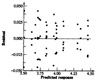
FIGURE 22.1 A plot of the residuals versus predicted response for the code comparison study with replications.
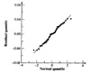
FIGURE 22.2 Normal quantile-quantile plot for the residuals of the code comparison study with replications.
|
Box 22.1 Analysis of Two-Factor Designs with Replications
- 1. Model: yijk = µ + αj + βi + γij + eijk. Here γij is the interaction.
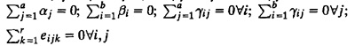
- 2. 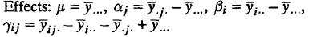
- 3. Allocation of variation: SSE can be calculated after computing other terms below:
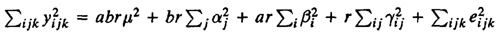
- SSY = SS0 + SSA + SSB + SSAB + SSE
- 4. Degrees of freedom:
- SSY = SS0 + SSA + SSB + SSAB + SSE
- abr = 1 + (a – 1) + (b – 1) + (a – 1)(b – 1) + ab(r – 1)
- 5. Mean squares: Divide the sums of squares by their respective degrees of freedom.
- 6. Analysis of variance: The ratios MSA/MSE, MSB/MSE, and MSAB/MSE have F[a – 1,ab(r – 1)], F[b – 1, ab(r – 1)], and F[(a – 1)(b – 1),ab(r – 1)] distributions.
- 7. Standard deviation of effects:
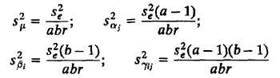
- 8. Contrasts:
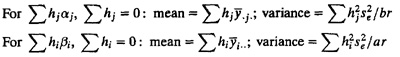
- 9. All confidence intervals are computed using t[1–α/2;ab(r–1)].
- 10. Model assumptions:
- (a) Errors are IID normal variates with zero mean.
- (b) Errors have the same variance for all factor levels.
- (c) Effects of various factors and errors are additive.
- 11. Visual tests:
- (a) The scatter plot of errors versus predicted responses should not have any trend.
- (b) The normal quantile-quantile plot of errors should be linear.
- (c) Spread of y values in all experiments should be comparable.
If any test fails or if the ratio ymax/ymin is large, multiplicative models or transformations should be investigated.
|
EXERCISE
- 22.1 Measured CPU times for three processors A1, A2, and A3 on five workloads B1 through B5 are shown in Table 22.10. Three replications of each experiment are shown. Analyze the data and answer the following:
- a. Are the processors different from each other at 90% level of confidence?
- b. What percentage of variation is explained by the processor-workload interaction?
- c. Which effects in the model are not significant at 90% confidence.
| TABLE 22.10 Data for Exercise 22.1
|
|
|
| A1
| A2
| A3
|
|
| B1
| 3,200
| 5,120
| 8,960
|
|
| 3,150
| 5,100
| 8,900
|
|
| 3,250
| 5,140
| 8,840
|
| B2
| 4,700
| 9,400
| 19,740
|
|
| 4,740
| 9,300
| 19,790
|
|
| 4,660
| 9,500
| 19,690
|
| B3
| 3,200
| 4,160
| 7,360
|
|
| 3,220
| 4,100
| 7,300
|
|
| 3,180
| 4,220
| 7,420
|
| B4
| 5,100
| 5,610
| 22,340
|
|
| 5,200
| 5,575
| 22,440
|
|
| 5,000
| 5,645
| 22,540
|
| B5
| 6,800
| 12,240
| 28,560
|
|
| 6,765
| 12,290
| 28,360
|
|
| 6,835
| 12,190
| 28,760
|
|
){kind=link}
){kind=link}
){kind=link}
){kind=link}